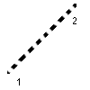

Réseau diffractant

Définition
Il est défini à la souris par les extrémités 1 et 2
Une boite de dialogue permet ensuite de choisir
- si c'est un réseau en transmission ou en réflexion
- le nombre de trait par mm
- les ordres représentables
Remarques
Cet objet relève de l'optique ondulatoire.
IL
est utilisé ici de la façon suivante: à un rayon incident correspondent
plusieurs rayons diffractés, dont les directions sont données par la
loi fondamentale des réseaux:
sin i -sin i0=k.longueur d'onde /pas en transmission
sin i sin i0=k.longueur d'onde /pas en réflexion
Mais cela n'a clairement de sens que pour une onde plane, et une observation à l'inifini de l'onde diffracté.
Retour à la page
d'accueil